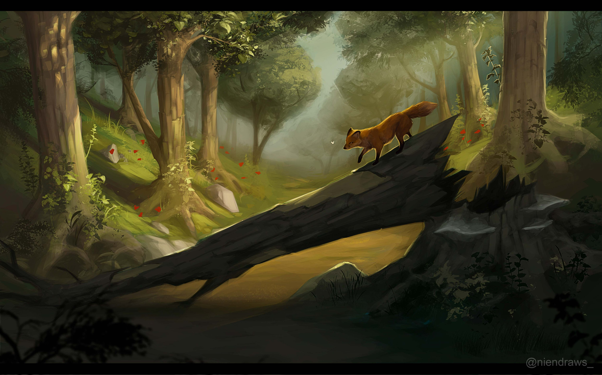

About Edgard
Edgard is an owl. He fights in the Forest militia as a rear scout. He has been deemed underserving of a more forward role due to a lack of courage.
Edgard's friend who made front lines, Exavier. Pre-war depiction.
Edgard's Characteristics
- He is afraid of heights.
- He prefers to fly with his eyes closed
- He loves his sword and gem shield.
Edgard's Companions
Edgard has a close-knit group of friends. While perhaps closest to Exavier despite their differences, he remains in good tidings with the others. Click on the links below to read more about them.